Yoga is a type of exercise in which you move your body into various positions in order to become more fit or flexible, to improve your breathing, and to relax your mind
1.Diabetes
-->Sun Salutations (Surya Namaskar)
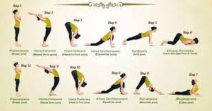-->Lying Down Body Twist (Folded leg Lumbar stretch)
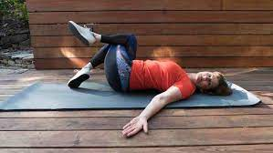-->Bow Pose (Dhanurasana)
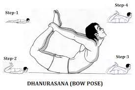-->Seated-forward Bend (Paschimottanasana)

-->Legs up the wall (Viparita Karani)

-->Bhujangasana (Upward Facing Dog Pose)
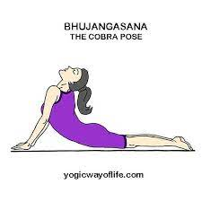-->Corpse Pose (Shavasana)
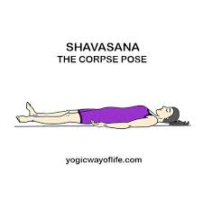2.Cancer
-->Tree Pose (Vrikshasana)
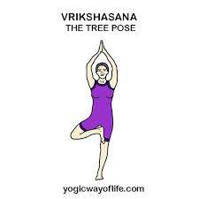-->Marjariasana
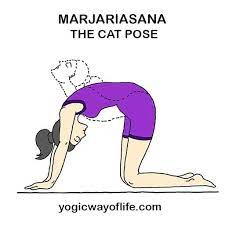-->Thunderbolt pose (Vajrasana)
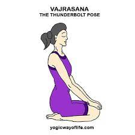-->Alternate Nostril Breathing (Pranayama)
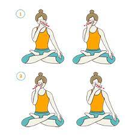3.Arthritis
-->Warrior pose (Virabhadrasana)
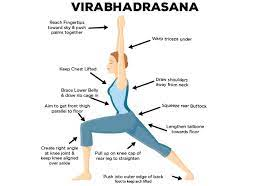-->Tree Pose (Vrikshasana )
-->Triangle Pose (Trikonasana)
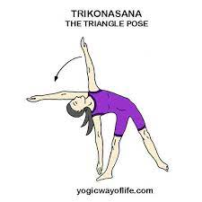-->Bridge Pose (Setubandhasana )

4.Heart disease
-->Extended triangle pose (Utthita Trikonasana)

-->Seated forward bend pose (Paschimottanasana )
-->Half spinal twist pose (Ardha matsyendrasana)

-->Cow face pose (Gomukhasana)
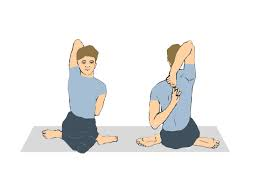-->Bridge pose (Setu Bandhasana)